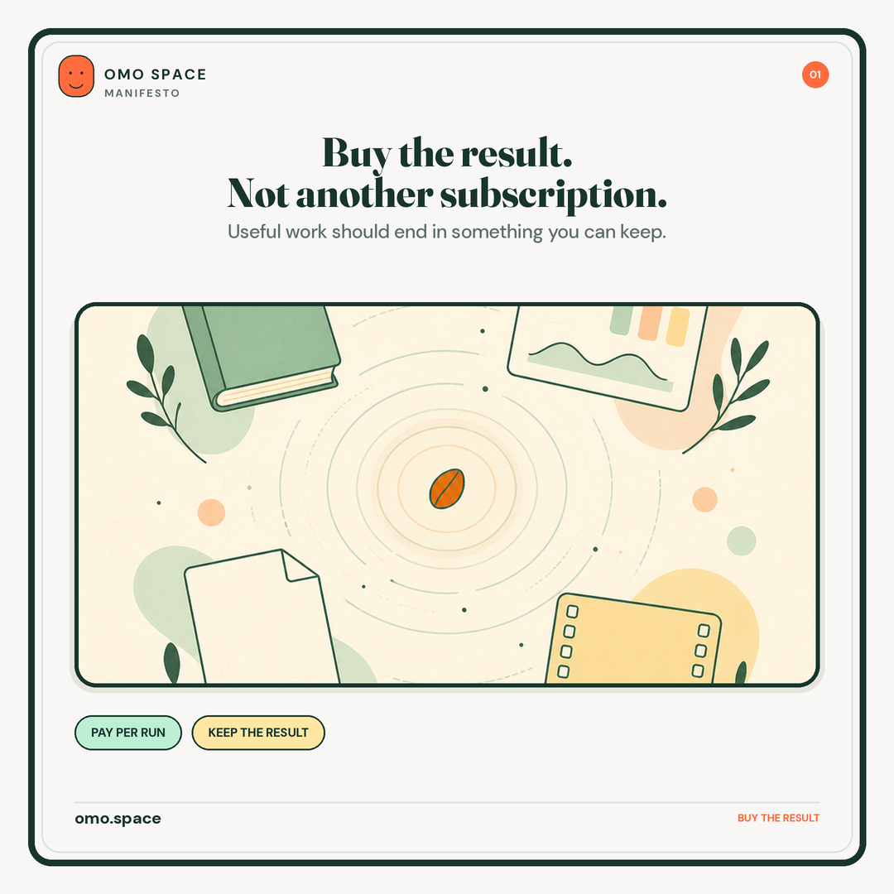
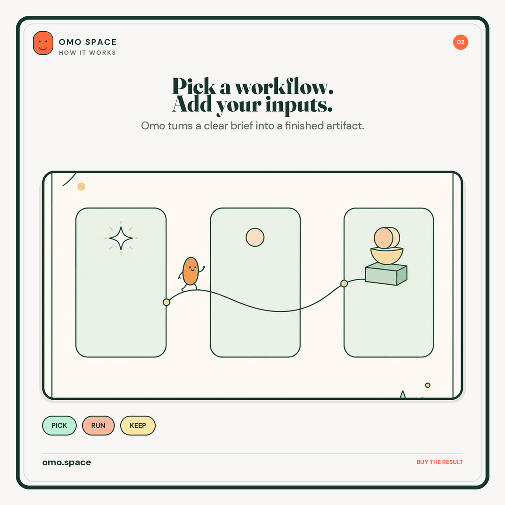
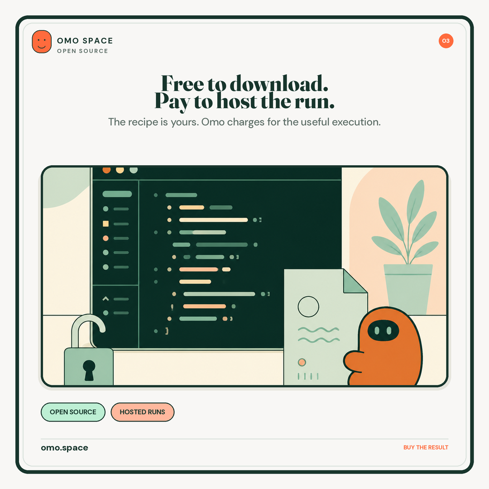
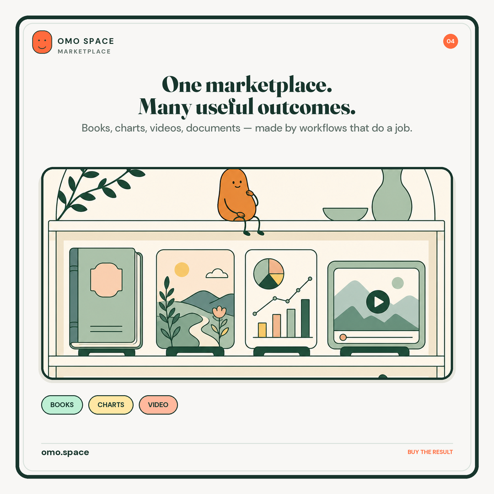
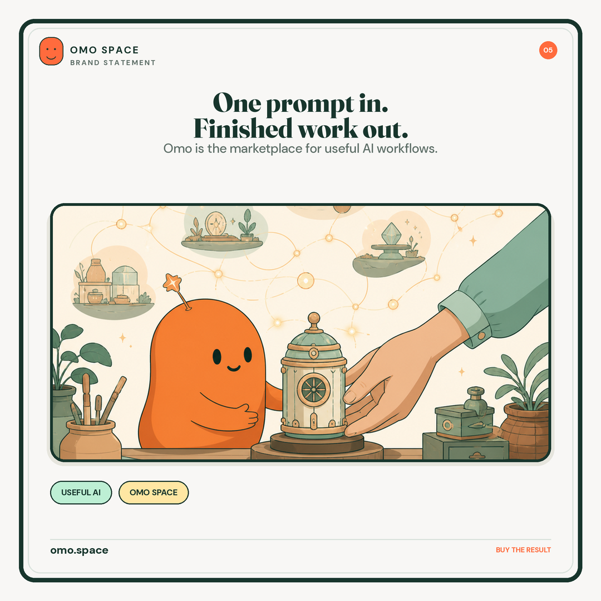

Omo Space / brand launch
Living utility
Useful AI should end in something you can keep.
A warm, intelligent marketplace for workflows that turn clear inputs into finished results. Pay for the useful run. Keep the result.
Visual DNA
Cream space. Pine structure. Pastel utility fields. One orange signal. Fraunces gives Omo a point of view. DM Sans keeps the product clear. The bean mark adds a small human cue without turning the brand into a cartoon.
CREAM#F8F7F5
PINE#17352C
MINT#BDEFD4
PEACH#FFB89D
BUTTER#FFE7A3
ORANGE#FF6B3D
MUTED#5F6F68
Typography
Display / Fraunces 800
Buy the result.
Keep the useful thing.
Keep the useful thing.
Body / DM Sans 400
Explain the result before the technology. Use short sentences. Make the useful thing feel tangible.
First five posts
One system. Five jobs: establish the commercial idea, explain the flow, state the open-source model, show the range of outcomes, and land the brand promise.





Recommendation: make this the Omo social baseline.
Use the living-utility system for the main feed. Use the bean, paths, and finished artifacts as recurring cues. Keep the copy result-first.
Use the living-utility system for the main feed. Use the bean, paths, and finished artifacts as recurring cues. Keep the copy result-first.